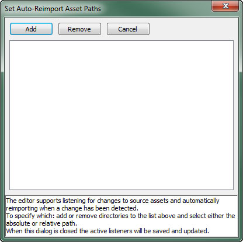
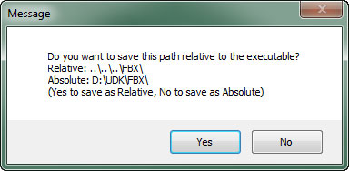
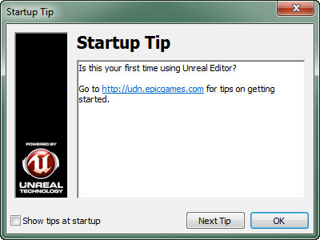
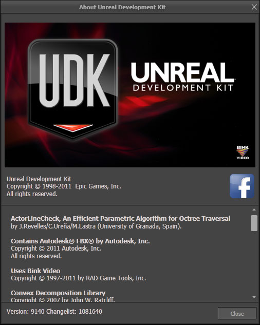

UDN
Search public documentation:
MainEditorMenuBarJP
English Translation
中国翻译
한국어
Interested in the Unreal Engine?
Visit the Unreal Technology site.
Looking for jobs and company info?
Check out the Epic games site.
Questions about support via UDN?
Contact the UDN Staff
中国翻译
한국어
Interested in the Unreal Engine?
Visit the Unreal Technology site.
Looking for jobs and company info?
Check out the Epic games site.
Questions about support via UDN?
Contact the UDN Staff
メインのエディタ ツールバー
File (ファイル)
- New (新規)
- マップを新規作成します。加算型ワールドまたは減算型ワールドでの作成を指定するオプションも用意されています。
- Open (開く)
- ディスクに保存されている既存のマップを開きます。
- Save Current Level (現在のレベルを保存)
- 編集中のレベルを保存します。ソース コントロールが有効になっている場合は、現在のレベルを保存することにより、ソース コントロールからチェックアウトするための画面が表示されます (チェックアウトされていない場合)。注意：どのレベルが「現在」のレベルかは、レベル マネージャーで確認できます。
- Save As (別名で保存)
- 現在のレベルに別のファイル名を付けて保存します。
- Save Modified (変更されたファイルの保存)
- あらゆるダーティな (変更された) コンテンツおよびマップ パッケージを保存します。表示されるダイアログでは、保存するパッケージを選択することができます。ソース コントロールが有効になっており、選択したパッケージがチェックアウトされていない場合は、パッケージをチェックアウトするためのダイアログが別途表示されます。 $ Save All (すべて保存) :ダーティな (変更した) コンテンツとマップ パッケージをすべて保存しますが、その際、保存するパッケージを選択するようには求められません。ただし、ソース コントロールが有効になっている場合は、パッケージをソース コントロールからチェックアウトするためのメッセージが表示されます。
- Save All Writable (書き込み可能なコンテンツをすべて保存)
- ディスク上で書き込み可能な、ダーティな (変更された) コンテンツとマップ パッケージをすべて保存します。ソース コントロールからのチェックアウトのためのメッセージは表示されません。
- Save All Levels (Force) (すべてのレベルを強制保存)
- ダーティ (変更された) ではないものも含め、すべての書き込み可能なレベルを保存します。ソース コントロールからのチェックアウトのためのメッセージは表示されません。
- Switch Renderer (レンダラを切り替える)
- サポートされているレンダラを切り替えます。変更するには、エディタを再起動する必要があります。再起動するかどうか尋ねられ、再起動を選択すると、あらゆる未保存のマップ / パッケージを保存するように求められます。
- Import (インポート)
- マップ コンテンツをインポートするためのコマンドです。
- Into New Map (新たなマップにインポートする) : 新たなマップを作成して、そのマップにコンテンツをインポートします。
- Into Existing Map (既存のマップにインポートする) : 既存のマップにコンテンツをインポートし、それを既存のコンテンツとマージします。
- Export (エクスポート)
- マップ コンテンツをエクスポートするためのコマンドです。
- All (すべて) : 現在ロードされているマップのコンテンツをすべてエクスポートします。
- Selected Only (選択項目のみ) : 現在選択されている項目のみをエクスポートします。
- Favorites (お気に入り)
- 素早いアクセスのために、お気に入りとしてマークされているマップのリストを表示します。
- Recent (最近使用した項目)
- 最近開いたマップのリストを表示します。このリストからマップを選択してロードすることができます。
- Exit (終了)
- 「Unreal」エディタを閉じます。
Edit (編集)
- Undo (アンドゥ)
- トランザクション スタックで直前に実行した処理を取り消します。
- Redo (リドゥ)
- トランザクション スタックで直前に実行したアンドゥを取り消します。
- Translate (平行移動)
- マップ内でアクタを動かすために使用する平行移動ウィジェットを有効にします。
- Rotate (回転)
- マップ内でアクタを回転させる際に使用する回転ウィジェットを有効にします。
- Scale (スケーリング)
- マップ内でアクタをスケーリング (拡大縮小) する際に使用するスケーリング ウィジェットを有効にします。
- Cut (カット)
- 選択した項目をクリップボードに送り、マップからその項目を削除します。
- Copy (コピー)
- 選択した項目をクリップボードに送ります。
- Paste (ペースト)
- クリップボードの内容をマップに貼り付けます。
- Duplicate (複製)
- 選択した項目を複製します。
- Delete (削除)
- 選択した項目を削除します。
- Select None (選択解除)
- 現在選択されている項目をすべて選択解除します。
- Select Builder Brush (ビルダ ブラシの選択)
- ビルダ ブラシを選択します。
- Select All (すべて選択)
- マップのコンテンツ全部を選択します。
- Select by Property (プロパティによる選択)
- 有効なプロパティおよび値に一致するプロパティ値を持つ項目をすべて選択します。プロパティは、[Property Window] (プロパティ ウィンドウ) のプロパティを、Shift キーを押しながら左クリックすることによって「有効」としてマーク付けすることができます。
- Select Current Post-process Volume (現在のポストプロセス ボリュームを選択)
- (もし存在すれば) ビューポート カメラが現在中に入っている PostProcessVolume (ポストプロセス ボリューム) を選択します。
- Invert Selection (選択項目の反転)
- マップ内で選択されていないすべての項目を選択します。
- Find Actors (アクタの検索)
- Search For Actors_ (アクタの検索) ダイアログを表示します。
View (表示)
- Browser Windows (ブラウザ ウィンドウ)
- ブラウザ ウィンドウの 1 つを開きます。
- Actor Properties (アクタのプロパティ)
- アクタ プロパティ ウィンドウを開きます。
- Surface Properties (サーフェスのプロパティ)
- サーフェス プロパティ ウィンドウを開きます。
- World Properties (ワールドのプロパティ)
- 現在のマップにおける WorldInfo アクタのためにプロパティ ウィンドウを開きます。
- UnrealKismet
- Kismet エディタ ウィンドウを開きます。
- UnrealMatinee
- 現在のマップにある既存の Matinee シーケンスをリスト表示します。シーケンスを選択すると、そのシーケンスのために Matinee エディタが開きます。
- Drag Grid (ドラッグ グリッド)
- ドラッグ グリッドへのスナップを切り替えます。グリッドのサイズを変更することもできます。
- Rotation Grid (回転グリッド)
- 回転のスナップを切り替えます。スナップ ポイント間の角度を設定することもできます。
- Scale Grid (スケーリング グリッド)
- スケーリング (拡大縮小) のスナップを切り替えます。スナップする増減パーセンテージも設定することができます。
- Change Autosave Options (自動保存オプションの変更)
- 自動保存機能を切り替えます。保存の頻度も設定できます。
- Detail Mode （詳細モード）
- ビューポートに表示する詳細度を設定します。
- Emulate Mobile Features (モバイル機能をエミュレートする)
- PC 上におけるモバイルの入力およびレンダリングのエミュレーションを切り替えます。(タッチベースの入力を有効化し、ガンマ補正、ある種のポストプロセス、平行光源マップを無効にします)。
- Show Transform Widget (変形ウィジェットを表示)
- 変形ウィジェットの表示を切り替えます。非表示になっている場合、従来の変形方法（Ctrl キーを押しながら、マウスの左ボタン、右ボタン、両方のボタンのいずれかをクリックしてドラッグ）を実行しない限り、変形機能は無効になります。
- Allow Translucent Selection (半透明の選択を有効化)
- 半透明マテリアルが適用されているジオメトリを選択するか否かをトグルします (切り替えます)。
- Allow Group Selection (グループ選択を有効化)
- アクタ グループ 内に含まれているアクタを選択するか否かをトグルします (切り替えます)。
- Use Strict Box Selection in Ortho Viewports (正投影ビューポートでのボックス選択を厳密化)
- 正投影ビューポートでオブジェクトを選択する際に、オブジェクト全体が選択ボックスで囲まれることを条件とするか否かを切り替えます。
- Draw Brush Marker Polys (ブラシ マーカー ポリゴンを描画)
- ビルダー ブラシおよびボリュームにおける透過マーカー ポリゴンの表示を切り替えます。
- Only Load Visible Levels in PIE (PIE に可視レベルのみをロード)
- PIE ゲームにおいて可視レベルのみをロードするか否かを切り替えます。ここでは、不可視レベルをロードしないように指定することができ、これにより、PIE ゲームのプレイ時におけるレベルのストリーミング パフォーマンスのシミュレーション精度が向上します。
- Draw Builder Brush (ビルダー ブラシの描画)
- ビルダー ブラシが選択されている場合に、ビューポートにおいてビルダー ブラシのポリゴンを描画するか否かを切り替えます。
- Lock Prefabs from Selection (選択項目のプレハブをロック)
- プレハブを構成する個々のアクタを選択するか否かを切り替えます。この機能が有効になっている場合は、プレハブ内の任意のアクタを選択するとプレハブ全体が選択されます。
- Enable Socket Snapping (ソケットのスナップを有効化)
- ソケットの表示を切り替えるとともに、ビューポート内に存在するアクタを、ビューポート内に存在する他のアクタ上にある既存のソケットに、スナップおよびアタッチさせるか否かを切り替えます。
- Enable Particle System LOD (パーティクル システムの LOD の有効化)
- ビューポートにおいて、パーティクル システムのための距離ベース詳細度を表示するか否かを切り替えます。
- LOD View Locking (LOD の表示ロック)
- ビューポートのための詳細度の表示ロックを切り替えます。これは、すべての視点のビューポートでのレンダリングに、有効な視点ビューポートの LOD が適用されることを意味します。また正投影ビューポートでの LOD の計算には、視点ビューポートの基点が使用されます。
- Enable Quick ProcBuilding Mode (クイック ProcBuilding モードの有効化)
- ProcBuilding (プロシージャル建造物) に変更を加えた際に、クイックアップデートを使用するか否かを切り替えます。
- New Floating Viewport (新規フローティング ビューポート)
- 分離された新規のフローティング ビューポートを作成します。
- Viewport Configuration (ビューポートの設定)
- エディタ内のビューポートの数とレイアウトを変更します。
- Fullscreen (全画面)
- エディタを全画面モードで起動するか否かを切り替えます。全画面表示の場合は、ウィンドウのタイトルバーが非表示になります。
- Lighting Info (光源情報)
- 光源の各種統計情報に関する複数の情報ダイアログにアクセスできます。
Brush (ブラシ)
- CSG Add (CSG 加算)
- 現在のビルダ ブラシから加算ブラシを新規作成します。
- CSG Subtract (CSG 減算)
- 現在のビルダ ブラシから減算ブラシを新規作成します。
- CSG Intersect (CSG 交差)
- 現在のビルダ ブラシで囲まれているすべての交差からブラシを作成するとともに、ビルダ ブラシを新しいブラシに交換します。
- CSG Deintersect (CSG 非交差)
- 現在のビルダ ブラシで囲まれているすべての非交差からブラシを作成するとともに、ビルダ ブラシを新しいブラシに交換します。
- Add Special (特殊ブラシの追加)
- 現在のビルダ ブラシを使用して新たな特殊ブラシを追加します。
- Add Volume (ボリュームの追加)
- 現在のビルダ ブラシを使用して新たなボリュームを追加します。
- Import (インポート)
- ファイルからブラシをインポートします。
- Export (エクスポート)
- ファイルにブラシをエクスポートします。
Build (作成)
- Geometry for Current Level (現在のレベルのジオメトリ)
- 現在のレベルのジオメトリのみを再作成します。
- Geometry for Visible Levels (可視的レベルのジオメトリ)
- すべての可視的レベルのジオメトリを再作成します。
- Lighting (光源)
- 光源を再作成するためのダイアログが開きます。
- AI Paths (AI パス)
- AI パスまたはナビゲーション メッシュを再作成します。
- Selected AI Paths (選択されている AI パス)
- 選択されている AI パスのみを再作成します。
- Build All (すべて作成)
- ジオメトリ、光源、AI パスをすべて再作成します。
- Build All (Selected AI Paths) (すべて作成 (選択されている AI パス))
- すべてのジオメトリと光源、ならびに、選択されている AI パスを再作成します。
- Build All and Submit to Source Control (すべてを作成してソース コントロールにサブミットする)
- すべてのジオメトリ、光源、AI パスを再作成して、作成されたレベルをソース コントロールにサブミットします (有効な場合)。
Play (プレイ)
- In Editor (インエディタ)
- PIE (プレイ インエディタ) ゲームにマップをロードします。
- Play In Active Viewport (アクティブなビューポートでプレイ)
- 現在アクティブなビューポートの内部において、 PIE (プレイ インエディタ) ゲームにマップをロードします。
- Install on iOS Device (iOS デバイス上にインストール)
- 現在のマップを、接続されている iOS デバイスにインストールします。(デバイスは、インストールされたモバイル プロビジョンの一部にもなっていることが条件となります)。詳細については、 iOS 搭載デバイス上でプレイする のページを参照してください。
- On Mobile Previewer (モバイル プレビュア上で)
- シミュレートされたモバイル入力と OpenGL ES2 レンダリング パイプラインを使用して、スタンドアロン型ゲームにマップをロードします。詳細については、 モバイル プレビュア のページを参照してください。
- On PC (PC 上で)
- スタンドアロン型 PC ゲームにマップをロードします。
Tools (ツール)
- Check map for Errors (マップのエラーをチェック)
- マップのエラーをチェックし、検出されたエラーをすべてダイアログに表示します。
- New Terrain (新規テレイン)
- 新たなテレイン アクタを作成するために、[Terrain Wizard] (テレイン ウィザード) ダイアログを開きます。
- Clean BSP Materials (BSP マテリアルをクリア)
- BSP ブラシにおける不要なマテリアル参照を削除します。
- Replace SkeletalMeshActors
- ここに説明を入れる。
- Regenerate All ProBuildings (あらゆる ProBuilding を再生成)
- マップ内の ProcBuilding (プロシージャル建築物) をすべて再作成します。
- Regenerate Selected ProBuildings (選択した ProBuilding を再生成)
- 現在マップ内で選択されている ProBuilding のみを再作成します。
- Generate All Buildings LOD Textures (すべての建造物 LOD テクスチャを生成)
- 遠距離から表示した際に、すべての ProcBuilding のために使用される render-to-texture (テクスチャへのレンダリング) 用 LOD テクスチャを再生成します。
- Generate Selected Buildings LOD Textures (選択されている建造物の LOD テクスチャを生成)
- 遠距離から表示した際に、すべての選択された ProcBuilding のために使用される render-to-texture (テクスチャへのレンダリング) 用 LOD テクスチャを再生成します。
- [Un]Lock read-only Levels (ロック [解除] する)
- リード オンリーのレベルを改変することができるようにするか否かを切り替えます。
- Set Auto-Reimport Asset Paths (自動再インポートするアセットパスの設定)
- エディタが、ソース テクスチャへの変更を待ち受けて、変更を検知したときに自動的に再インポートします。これによって、監視されるディレクトリを追加または削除することができるダイアログが開きます。

相対パスか絶対パスのどちらかを使用するように選択することができます。

ダイアログが閉じられると、アクティブなリスナーが保存および更新されます。
Preferences (ユーザー設定)
Help (ヘルプ)
- Online Help (オンライン ヘルプ)
- ブラウザで UDN を開きます。
- Online Forums (オンライン フォーラム)
- ブラウザで UDK フォーラムのページを開きます。
- Setting Up Swarm (Swarm の設定)
- ブラウザで Swarm UDN ドキュメントを開きます。
- Show Welcome Screen (ウェルカム スクリーンを表示)
- ウェルカム スクリーンを表示します。
- Display Startup Tip (起動時のヒントを表示)
- Startup Tip (起動時のヒント) ダイアログを表示します。

- About (バージョン情報)
- エディタのバージョン情報を表示します。
